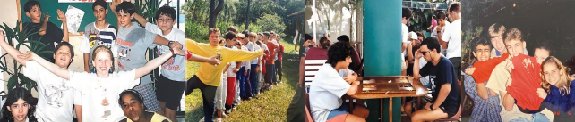

40 ANOS DE HISTÓRIA, EM QUE OS JOVENS EDUCAM O PRESENTE, ENTENDENDO O PASSADO PARA MUDAR O FUTURO!
ALÊ VÊ HAGSHEM!!
Na década de 70, por grande influência de Rachel Cohen (Z'L), uma grande líder da nossa comunidade judaica,
passou a buscar maior proximidade com Israel, e um sionismo mais intenso e prático.
Nos anos 80, a comunidade judaica mineira passava por fortes mudanças: o Gachelet, snif mineiro da Chazit
Hanoach,
sofria uma grande crise, e já não tinha o apoio da Tnuá Artzit. As Na’amat Pioneiras, sob liderança da Rachel
Cohen (Z'L),
já mantinham fortes conexões com o partido trabalhista israelense Mapai, e apoiavam a criação de uma Tnuá que
tivesse uma
forte conexão com Israel também.
Na mesma época, os movimentos Ichud Habonim e Dror se organizavam para se juntar em um movimento só. Em 1981,
com o
Habonim Dror já formado, um chaver do snif Rio, Amnon Solomon, viu a oportunidade de expandir a Tnuá para Belo
Horizonte,
e passou a visitar a comunidade, dando atividades como leakot ou encontros com chaverim cariocas. O Habonim
Dror, apoiado por
algumas lideranças comunitárias, passou a ser cotado para abrir um snif em BH, substituindo o Gachelet. Assim,
realizou-se uma
reunião com jovens e seus pais na AIB, para votar qual Tnuá se manteria na comunidade. O Habonim Dror propôs a
ida de Amnon
como Sheliach para BH, dando mais suporte que o Gachelet teria, e, assim, votou-se para a criação do Snif Belo
Horizonte do
Habonim Dror.

Em 1981 criou-se o Habonim Dror, e com muito trabalho e identificação tnuatit de seus chaverim, o Dror conseguiu
se estruturar.
Amnon usou como estratégia inicial convidar jovens que frequentavam a UIBH, e quebrar a divisão comunitária que,
mesmo
enfraquecida, ainda existia. Kiba Lerman (Z’L) foi o primeiro maskir em BH, e em 1982 dois chaverim realizaram o
programa
Shnat Hachshará do Habonim Dror por Belo Horizonte.
A partir de 1981, foram enviados vários Shlichim, dentre eles Yair, Cebola, Borrega, Moyshinho, Buju e Xaxá,
para que o
trabalho fosse orientado com o propósito de garantir a permanência do Dror em Belo Horizonte. A Tnuá vinha se
estruturando,
passando por dificuldades mas criando momentos incríveis para seus chaverim e para a comunidade mineira.
Em quase todos os anos, a partir de 1981, nosso snif teve kvutzot Shnat, afirmando a Tnuá em Belo Horizonte.
Mesmo com alguns
problemas e instabilidades, o Snif Itzchak Rabin se mantém ativo e vivo, seguindo sua missão de manter a
presença dos jovens
na comunidade judaica e nos educando, para trazermos os futuros direcionamentos de nossa kehilá e de Israel.
O Habonim Dror é o espaço em que os jovens do presente estudam e aprendem o passado, para mudarmos o futuro!